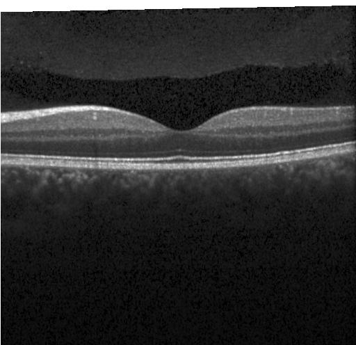

تصوير طبقات الشبكية
فحص OCT
ارفع صورة التصوير المقطعي للتماسك البصري وعاين جودتها. تحليل AI غير متصل في هذه المرحلة.

الخطوة الأولى
ارفع صورة OCT
اختر الصورة أو اسحبها إلى المساحة أدناه لمعاينتها محليًا.
- 1رفع الصورة
- 2تحليل AIغير متصل
- 3النتيجةمرحلة لاحقة
صورة الفحص
JPG أو JPEG أو PNG · حتى 10 MB
اسحب صورة OCT هنا
أو اختر صورة مدعومة من جهازك
اختيار صورةتبقى الصورة داخل هذا المتصفح ولا تُرفع إلى خادم.
واجهة التحليل جاهزة للربط لاحقًا مع FastAPI ونموذج مدرّب.